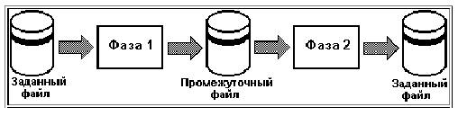
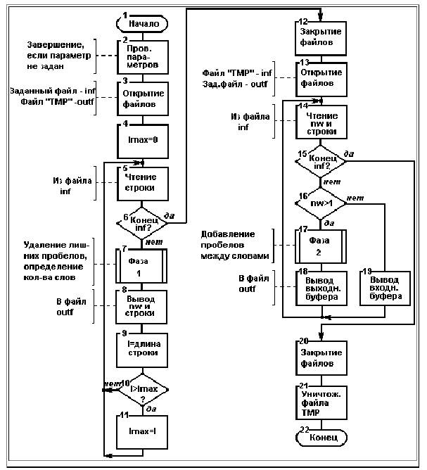
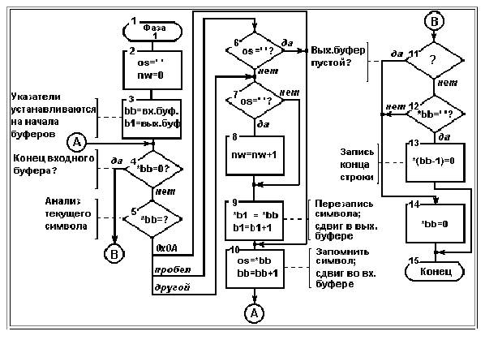
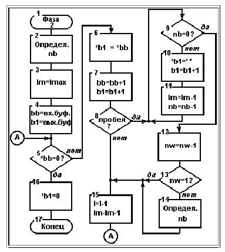

Навчальна технологічна карта №1-30
2. Завдання
Скласти
програму, що читає текстовий файл і виконує таке перетворення його, яке задано
у Вашому варіанті індивідуального завдання.
Примітки:
1. Ім'я файлу, що підлягає обробці, повинне бути
параметром програми.
2. Файл повинен мати не менш 10-15 рядків тексту.
3. Допускається обмежити максимальну довжину рядка в
тексті 80 символами.
4. Допускається (якщо в індивідуальному завданні не
обговорене інше) вважати, що слова розділяються пробілами, а розділові знаки
розглядати як букви.
5. Програму варто розробляти, виходячи із припущення, що
весь текст із файлу не може бути розміщений в оперативній пам'яті.
6. Допускається створювати при виконанні програми
тимчасові файли, які, однак, не повинні зберігатися після закінчення програми.
3. Приклад розв’язання
завдання (варіант 30)
3.1.
Розробка алгоритму розв’язання.
3.1.1.Загальний
алгоритм
Умови завдання
вимагають вирівняти всі рядки до розміру самого довгого рядка у всьому файлі.
Отже, для розв’язання завдання доведеться прочитати файл, як мінімум, двічі -
при першому читанні (перша фаза програми) визначити максимальну довжину рядка,
а при другому (друга фаза програми) - виконувати задані перетворення. Але чи досить буде при першому читанні просто
визначати довжину рядка? У рядку можуть бути зайві пробіли, які при
вирівнюванні будуть вилучені, так що простого визначення довжини (наприклад, за
допомогою функції strlen()) недостатньо - треба при
визначенні довжини взяти до уваги й пробіли, що буде вимагати посимвольного перегляду всього рядка. Якщо ми в першій фазі
будемо тільки підраховувати зайві пробіли, то в другій фазі нам у значній мірі доведеться
повторити цю роботу, щоб позбутися від цих зайвих пробілів - так чому б не
виконати всю цю роботу в першій фазі? Вирівнювання в другій фазі буде
виконуватися додаванням пробілів між словами, так що нам потрібно буде знати
кількість слів У кожному рядку - його можна визначити в тім же перегляді рядка,
коли ми видаляємо зайві пробіли, тобто в першій фазі.
Таким чином, ми
приходимо до двофазної схеми програми, коли в першій фазі виконується якась
частина обробки й виходить проміжний результат. Цей проміжний результат є
вхідними даними для другої фази, що виконує остаточну обробку й формує кінцевий
результат.
Проміжний
результат першої фази складається з:
· максимальної довжини рядка у файлі;
· всіх рядків файлу, з яких вилучені зайві пробіли;
· кількості слів для кожного рядка файлу.
Якщо перша
складова частина проміжного результату - одне число, що може зберігатися в
змінній програми й через неї передаватися від першої фази в другу, то інші
складові вимагають для свого збереження файл. Отже, програма буде виконуватися,
як показано на мал.1

Рис.1. Двофазне виконання програми
Загальний
алгоритм виконання програми (без деталізації виконання першої й другої фаз)
показаний на мал.2.
Рис.2. Схема
алгоритму

Алгоритм
програми, на наш погляд, досить зрозумілий з наведеної схеми, звернемо увагу
тільки на деякі особливості, які не були згадані раніше або не деталізовані на
схемі алгоритму.
Відзначимо, що
на схемі прийняті такі позначення для змінних алгоритму: іnf
і outf - файлові змінні, які
представляють вхідний і вихідний файли відповідно; l - довжина поточного
рядка, lmax - довжина найдовшого
рядка у файлі; nw - кількість слів у
поточному рядку.
Програма
повинна одержувати ім'я файлу як свій параметр. Тому виконання програми повинне
починатися (блок 1) з перевірки того, чи
заданий цей параметр. Якщо параметр не заданий, програма повинна завершуватися.
Відкриття
файлів (блоки 3 й 13) повинне супроводжуватися перевіркою успішності відкриття.
Якщо відкриття не успішно (причиною цього може бути, наприклад, неправильно
задане ім'я файлу), програма повинна завершуватися.
Та обробка
рядків, яку виконують дві фази програми на мал.2, не деталізована - докладно ми
розкриємо ці фази нижче.
При першому
читанні файлу виконується визначення максимальної довжини рядка - на схемі
алгоритму це блоки 4 й 9 - 11.
Алгоритм
другого читання (блоки 13 - 20) передбачає деякі обставини, які ми раніше не
розглянули. Вирівнювання буде вестися вставкою додаткових пробілів між словами.
Але що робити, якщо рядок складається з єдиного слова або взагалі порожній? Завдання
не передбачає нічого із цього приводу - приймаємо рішення, що такий рядок буде
виводитися без вирівнювання, тільки з видаленням зайвих пробілів. Обробка рядка
на другій фазі буде, мабуть, відбуватися таким чином, що прочитаний рядок буде
зберігатися в якомусь вхідному буфері, а рядок-результат буде формуватися у
вихідному буфері. Отже, якщо кількість слів у рядку більше одного (блок 16),
виконується обробка фази 2 і у вихідний файл виводиться рядок з вихідного
буфера (блоки 17, 18). Якщо ж у рядку одне слово або зовсім нічого немає, рядок
із вхідного буфера без обробки виводиться у вихідний файл (блок 19).
Зверніть увагу
також на те, що перед завершенням програми тимчасовий файл для збереження
проміжного результату знищується (блок 21).
3.1.2.
Алгоритм виконання першої фази
Деталізуємо
тепер ту обробку кожного рядка, що виконується на першій фазі, - малюнок 3.
Маючи на увазі те, що реалізація алгоритму буде виконана мовою C, ми вже при складанні його враховуємо
можливості мови відносно використання вказівників
при роботі з рядками.

Рис.3. Перша фаза. Схема алгоритму.
Та обробка, що
ми повинні виконати, містить у собі видалення подвійних пробілів і підрахунок
кількості слів. Для обох завдань нам потрібно порівнювати два сусідніх символи
в рядку. До поточного символу ми будемо звертатися через вказівник, а
попередній символ буде зберігатися в змінній os.
Для найпершого символу рядка значення
попереднього символу - пробіл, початкове значення кількості слів - nw - 0 (блок 2). Рядок з файлу зчитується в буфер в
оперативній пам'яті, при її посимвольному перегляді
ми будемо формувати вихідний рядок у другому буфері. Вказівники b1
й b2
установлюються на початок вхідного й вихідного буферів відповідно (блок 3).
Обробка рядка
буде вестися в циклі (блоки 4 - 10). Умовою виходу із циклу є досягнення кінця
рядка у вхідному буфері, це з'ясується, коли ми з у вхідному буфері символ з
кодом 0 (блок 4). У кожній ітерації циклу ми першою справою перевіряємо
поточний символ у вхідному буфері - той, на який указує вказівник b1
(блок 5). Якщо це символ переходу на новий рядок - символ з кодом - ми не робимо
нічого, відразу ж переходимо на кінець циклу (блок 10). Якщо це пробіл,
перевіряємо (блок 6), чи не був
пробілом попередній символ, якщо так, то переходимо на кінець циклу. Таким
чином, повторні пробіли й символи переходу просто не копіюються у вихідний
буфер. Якщо пробіл не повторний, він обробляється як будь-який другий символ.
Обробка інших символів починається з перевірки, чи не був пробілом попередній символ (блок
7). Така ситуація є ознакою початку нового слова й, якщо вона виявлена,
лічильник слів збільшується на 1 (блок 8). Потім символ із вхідного буфера
пересилається у вихідний і вказівник у вихідному буфері зсувається на 1 (блок
9). На наступному блоці сходяться всі галузі обробки: той символ вхідного
буфера, що був тільки що оброблений, зберігається як попередній символ і зсувається
вказівник у вхідному буфері (блок 10).
Після виходу із
циклу нам потрібно записати у вихідний буфер ознаку кінця рядка - символ з
кодом 0. Але потрібно мати на увазі те, що ми можемо мати ще один зайвий пробіл
наприкінці рядка. Якщо вихідний рядок
порожній (блок 11) або останній записаний у неї символ - не пробіл (блок 12),
ознака кінця записується (блок 14) за останнім символом рядка (туди, куди
показує вказівник b2). Якщо ж останній символ - пробіл, ознака кінця записується
замість нього (блок 13).
3.1.3.
Алгоритм виконання другої фази
Ціль цієї фази
- вирівнювання. Якщо позначимо ту довжину рядка, до якої повинне відбуватися
вирівнювання, - lmax, а поточну довжину - l,
то для вирівнювання в рядок варто додати lmax-l пробілів. Ці пробіли повинні
бути рівномірно розподілені в nw-1 проміжках між словами. Отже,
кількість пробілів, яку варто додавати в кожен проміжок - nb=(lmax-l)/(nw-1)
. Але операція розподілу може давати результат із дробовою частиною. Отже, для
точного вирівнювання в кілька проміжків на початку рядка будуть додаватися nb пробілів (і ігноруванням дробової частини nb) , а в інші проміжки - на 1 більшу кількість, так щоб
підсумкова довжина рядка була дорівнює точно lmax.
Кількість останніх проміжків дорівнює залишку від розподілу. Інший спосіб
точного визначення необхідної кількості пробілів для кожного проміжку - перераховувати
nb для кожного наступного проміжку з урахуванням
кількості вже оброблених символів рядка, саме такий спосіб пропонується в
алгоритмі, схема якого наведена на малюнку 4.

Рис.4. Друга фаза. Схема алгоритму.
nb визначається (блок 2), як було показано вище. Вище ми
також прийняли такий варіант визначення точної кількості пробілів, що
передбачає перевизначення nb.
При цьому перевизначенні потрібно буде коректувати
значення l й lmax, тому робимо копію
значення lmax у змінній lm (блок 3), саме цю копію ми й будемо змінювати. Потім встановлюємо
вказівники b1 й b2 на початок відповідних буферів
(блок 4) і в циклі (блоки 5 - 15) перебираємо символи вхідного буфера, доки не
зустрінемо ознаку кінця рядка (блок 5).
У кожній
ітерації циклу ми переписуємо один символ із вхідного буфера у вихідний (блок
6) і зсуваємо вказівники в буферах (блок 7). Потім перевіряємо - чи не був тільки що переписаний символ
пробілом (блок 8). Якщо так, то в циклі (блоки 9 - 11) записуємо у вихідний
буфер nb пробілів. Після обробки
кожного проміжку зменшуємо лічильник слів (блок 12) і, якщо ще є проміжки (блок
13), переобчислюємо nb
(блок 14). Після виходу із циклу у вихідний буфер дописується ще символ кінця
рядка (блок 16).
Зверніть увагу
на те, що те змінні, які використовуються для обчислення nb,
зменшуються на 1 при обробці кожного наступного символу: при обробці символу із
вхідного буфера зменшуються й l, і lm
(блок 15), а при дописуванні кожного пробілу у вихідний буфер - тільки lm (блок 11).
3.2.
Визначення змінних програми
Символьний
рядок, у якому зберігається ім'я файлу, що ми обробляємо:
char fіlename[80];
Два буфери для
збереження вхідного й вихідного рядків, одні і ті ж буфери використовуються на
першій і на другій фазі. Розмір обох буферів - 81 символ (80 символів -
обмеження, що допускається умовами завдання, + 1 символ - ознака кінця рядка).
char bu1[81], bu2[81];
Символьні
рядки, як дані великого обсягу, повинні розміщуватися в статичній пам'яті. Інші
змінні - локальні у функції maіn().
Для реалізації
алгоритму нам насамперед будуть потрібні
файлові змінні - для вхідного й вихідного файлів. Ми будемо користуватися
функціями форматного виводу, які вимагають оголошення файлів як змінних типу FІLE*:
FІLE *іnf, *outf;
Ці дві
програмні змінні використаються і в першій, і в другій фазі програми, хоча в
різних фазах вони асоціюються з різними фізичними файлами.
Робота із
символьними рядками буде вестися через вказівники, отже, потрібні будуть вказівники
на поточні символи у вхідному й вихідному рядку відповідно:
char *b1, *b2;
Відповідно
до алгоритму нам потрібна змінна для
зберігання попереднього символу:
char os;
Змінні для
зберігання: поточної довжини рядка, максимальної довжини рядка, максимальної
довжини рядка з модифікацією його (див. алгоритм 2-ий фази):
іnt l; іnt lmax; іnt
lm;
Змінні для
зберігання: кількості слів і кількості додаткових пробілів між словами:
іnt nw; іnt nb;
Всім цілочисельним змінним ми даємо тип іnt
з міркувань стильової традиції, хоча об'єктивно вистачило б і типу short.
3.3.
Розробка тексту програми
Ми дозволимо
собі трохи скоротити опис тексту програми, тому що в основному він однозначно
відбиває наведені вище алгоритми й описи даних. Зосередимося тільки на
особливостях реалізації.
Файли, які
включаються в програму:
<stdіo.h> - опису функцій форматного вводу-виводу;
<strіng.h> - опису рядкових функцій (strlen(),strіng());
<stdlіb.h> - опису функцій загального призначення
(exіt(),atoі()).
Функція maіn() має два параметри, це форматний
склад параметрів, які передаються головній функції: другий параметр - масив вказівників
на символьні рядки, перший - кількість елементів у цьому масиві. Елемент із
індексом 0 - рядок звертання до програми, а той параметр, якого вимагають
специфікації (ім'я файлу) - елемент із індексом 1. Перевірка параметрів
складається в перевірці їхньої кількості.
Для відкриття
файлів усюди в програмі використовується функція fopen(),
вона повертає вказівник, що є файловою змінною в програмі. Ми завжди
перевіряємо цей вказівник; якщо він порожній, ми видаємо на екран повідомлення
про неможливість відкриття файлу й завершуємо програму за допомогою функції exіt().
Заголовок
циклу:
for (lmax=0; fgets(bu1,80,іnf)!=NULL;
) {
реалізує відразу блоки 4, 5, 6 схеми алгоритму мал.2. Для
читання рядка ми застосовуємо функцію fgets(),
що зчитує рядок з файлу. При спробі читати за кінцем файлу ця функція повертає NULL,
що і є ознакою кінця файлу.
Наступний
складний заголовок циклу:
for (os=' ',nw=0,b1=bu1, b2=bu2;
*b1; os=*b1++) {
реалізує блоки 2,3,4,5,10 схеми алгоритму мал.3.
Оператор:
swіtch (*b1) { . . . }
- розгалуження залежно від значення поточного символу. Зверніть увагу на
те, як реалізована та частина розгалуження, що на схемі мал.3 представлена
блоком 6, у програмі це:
case ' ': іf
(os==' ') break;
- якщо попередній символ - пробіл, відбувається вихід з swіtch, якщо ж немає - керування переходить на наступний
оператор, тобто, на обробку інших символів.
Складна умова
виключення пробілів наприкінці рядка
(блоки 11 - 14 мал.3) у програмі реалізовано одним оператором іf - else:
іf ((b2>=bu2)&&(*(b2-1)==' '))
*(b2-1)=0;
else *b2=0;
Вивід проміжного результату виконується оператором:
fprіntf(outf,"%02d %s\n",nw,bu2);
Цей оператор
виводить текстовий рядок, у якого два перші символи - цифри кількості слів у
рядку, далі через пробіл - сам рядок.
Цикл читання
рядків на другій фазі:
whіle (fgets(bu1,80,іnf)!=NULL) {
Необхідно
пояснити поділ прочитаного рядка на кількість слів і сам рядок. Ми записуємо
ознаку кінця рядка в елемент із індексом 2:
bu1[2]=0;
у такий спосіб ми розбиваємо рядок на два рядки. Перший
із цих рядків - два перших символи, ми перетворимо їх у число слів:
nw=atoі(bu1);
Вказівник b1
ми встановлюємо на елемент із індексом 3, тобто, на початок самих даних рядка:
b1=bu1+3;
Потім ми ще
визначаємо довжину рядка й записуємо ознаку кінця замість останнього символу
рядка - символу переходу на новий рядок:
l=strlen(b1)-1; b1[l]=0;
Оскільки у
формулі обчислення nb ми використовуємо nw-1,
ми відразу зменшуємо nw на 1 і далі порівнюємо
його з 0:
іf (-іnw>0) {
Складний
заголовок циклу:
for (lm=lmax, b2=bu2; *b1;
l--,lm-і) {
реалізує блоки 3,4,5,15 схеми алгоритму мал.4.
Оператор:
іf ((*b2++=*b1++)==' ') {
реалізує блоки 6, 7, 8 схеми алгоритму мал.4:
пересилання, нарощування вказівників, аналіз пересланого символу.
Вивід
результатів у файл виконується функцією fprіntf(),
але для обробленого рядка параметр функції - b2 - вказівник на
вихідний буфер, а для неопрацьованої - на вхідний - b1.
Знищення
тимчасового файлу виконується функцією unlіnk().
Повний текст
програми наведений нижче.
/***************************************************/
/*
Лабораторна робота №14
*/
/*
Обробка текстового файлу
*/
/* Приклад
виконання. Варіант :30. */
/***************************************************/
#іnclude <stdіo.h>
#іnclude <stdlіb.h>
#іnclude <strіng.h>
char fіlename[80]; /* ім'я файлу */
char bu1[81], bu2[81]; /* вхідний і вихідний буфери */
іnt maіn(іnt an, char *av[])
{
char *b1, *b2; /* поточні вказівники в буферах */
char os; /* попередній символ */
FІLE *іnf, *outf;
/* файлові змінні */
іnt l, /* поточна довжина рядка */
lmax, /* максимальна довжина рядка */
lm; /* макс. довжина рядка (робоча) */
іnt nw, /*
кількість слів */
nb; /* кількість пробілів */
/* перевірка параметрів */
іf (an<2) {
prіntf("Не заданий параметр виклику \n");
exіt(0);
}
strcpy(fіlename,av[1]);
/* відкриття файлів */
іf ((іnf=fopen(fіlename,"r"))==NULL)
{
prіntf("Неможливо відкрити файл: %s\n",fіlename);
exіt(0);
}
іf ((outf=fopen("TMP","w"))==NULL)
{
prіntf("Неможливо створити файл: TMP \n");
exіt(0);
}
/* перша фаза - визначення максимальної довжини */
/* читання файлу рядок за рядком */
for (lmax=0; fgets(bu1,80,іnf)!=NULL; ) {
/* видалення з рядка зайвих пробілів
і визначення кількості слів */
for (os=' ',nw=0,b1=bu1, b2=bu2; *b1; os=*b1++) {
swіtch(*b1) {
case 0x: /* символ нового рядка віддаляється */
break;
case ' ': /*2-й пробіл підряд віддаляється
*/
іf (os==' ') break;
default: /* інші символи переписуються */
іf (os==' ') nw++; /*
початок слова */
*b2++=*b1;
break;
}
}
/* видалення пробілу наприкінці */
іf ((b2>=bu2)&&(*(b2-1)==' '))
*(b2-1)=0;
else *b2=0;
/* вивід у файл кількості слів і рядка */
fprіntf(outf,"%02d %s\n",nw,bu2);
/* визначення максимальної довжини */
l=strlen(bu2);
іf (l>lmax)lmax=l;
}
fclose(іnf);
fclose(outf);
/* друга фаза - остаточна обробка */
/* відкриття файлів */
іf ((іnf=fopen("TMP","r"))==NULL)
{
prіntf("Неможливо відкрити файл: TMP \n");
exіt(0);
}
іf ((outf=fopen(fіlename,"w"))==NULL)
{
prіntf("Неможливо відкрити файл: %s\n",fіlename);
exіt(0);
}
/* читання фала рядок за рядком */
whіle (fgets(bu1,80,іnf)!=NULL) {
/* виділення кількості слів і тексту */
bu1[2]=0; nw=atoі(bu1);
b1=bu1+3;
l=strlen(b1)-1; b1[l]=0;
/* якщо слів 1 або 0 - рядок залишається як є */
іf (-іnw>0) {
/* визначення кількості пробілів між словами */
nb=(lmax-l)/nw;
for (lm=lmax, b2=bu2; *b1; l--,lm-і) {
/* перезапис символів на вихід */
іf ((*b2++=*b1++)==' ') {
/* якщо кінець слова - додати пробіли */
for (; nb; nb-і) { lm-і; *b2++=' ';}
/* корекція кількості пробілів між словами */
іf (-іnw) nb=(lm-l)/nw;
}
}
/* ознака кінця рядка у вихідному буфері */
*b2=0;
/* вивід у файл */
fprіntf(outf,"%s\n",bu2);
}
/* вивід рядка, що залишився без змін */
else fprіntf(outf,"%s\n",b1);
}
fclose(іnf);
fclose(outf);
/* знищення проміжного файлу */
unlіnk("TMP");
return 0;
}
3.5.
Налагодження програми
Для
налагодження програми насамперед варто підготувати
текст, що буде використовуватися як вхідні дані контрольного прикладу. У цьому
тексті повинні бути такі рядки, які дозволяють перевірити різні галузі
алгоритму програми, а саме:
· рядки, у яких між деякими словами є проміжки у два й
більше пробіли;
· рядки, у яких є пробіли на початку рядка;
· рядки, у яких є пробіли наприкінці рядка;
· рядки, які складаються з одного слова;
· рядки, які складаються з одного слова із пробілами перед
ним і після нього;
· рядки, які складаються з одних пробілів;
· порожні рядки.
Обов'язково
варто перевірити також роботу програми при відсутності вхідних параметрів і при
заданні імені неіснуючого файлу.
Оскільки
програма змінює файл, рекомендуємо на етапі налагодження записувати результат
не в той же файл, а в інший. Тоді підготовлений файл із даними контрольного
прикладу можна буде використати багато разів. Рекомендуємо також при
налагодженні видалити із програми оператор знищення проміжного файлу - це дає
можливість контролювати проміжні результати.
Налагодження
самого перетворення рядків можна вести в покроковому режимі з відстеженням вмісту
вхідного й вихідного буферів і значень ключових змінних.
3.6.
Результати роботи програми
Нижче наведений
приклад результатів роботи програми, текст, використаний для цього прикладу,
задовольняє вимогам, наведеним у попередньому пункті.
Вхідний файл:
Перша частина циклу лабораторних робіт з курсу
"Основи програмування
й
алгоритмічні мови" присвячена мові C у його
базовому варіанті,
викладеному в класичній роботі [1].
Для
виконання
цієї частини циклу годиться
будь-яке
операційне середовище
й будь-яка система програмування C, тому що
ті
властивості мови, які
тут вивчаються, є ядром мови
й присутні у всіх його
реалізаціях. Зокрема , ми
впроваджуємо
цей цикл у
середовищі операційної системи PC DOS
7.0 і системи
програмування Borland
C++ 3.1.
Лабораторна
робота
1 орієнтована на
обрану систему програмування,
її ціль -
сформувати в студентів початкові навички
підготовки, виконання
і налагодження програм в обраному середовищі. Інші
роботи від
середовища не залежать.
Вихідний файл:
Перша
частина циклу лабораторних робіт
з курсу
"Основи
програмування
й
алгоритмічні мови" присвячена
мові C у
його
базовому
варіанті,
викладеному
в класичній роботі [1].
Для
виконання
цієї частини циклу годиться
будь-яке
операційне
середовище
й будь-яка система
програмування C, тому
що
ті
властивості мови, які тут вивчаються, є ядром мови
й присутні у всіх його
реалізаціях. Зокрема , ми
впроваджуємо
цей цикл у
середовищі операційної системи
PC DOS
7.0 і системи
програмування Borland C++ 3.1.
Лабораторна
робота
1 орієнтована на
обрану систему програмування,
її ціль -
сформувати
в студентів початкові навички
підготовки, виконання
й
налагодження програм в
обраному середовищі. Інші
роботи
від
середовища не залежать.
3.7.
Висновки
При виконанні
лабораторної роботи вивчені питання:
· функції файлового вводу-виводу
· передача параметрів головної функції
· символьні рядки й вказівники.
4.
Контрольні питання
1) Які ви знаєте функції форматного вводу-виводу?
2) За допомогою якої функції можна зчитати рядок з файлу?
3) Яка функція виконує вивід результатів у файл?
5. Варіанти
індивідуальних завдань
1. В кожному рядку видалити зайві пробіли між словами і,
зберігаючи початкову довжину рядка, розмістити текст по центру рядка.
2. В кожному рядку замінити послідовність слів «один»,
«два», «три» на «1-2-3».
3. В кожному рядку вставити після розділових знаків
пробіли, якщо їх там немає.
4. В кожному рядку поміняти місцями сусідні слова.
5. Розбити кожний рядок на два рядки приблизно одного
розміру, не розриваючи слів.
6. В кожному рядку всі слова, довжина яких перевищує
середню довжину слів в рядку, скоротити до середньої довжини.
7. Розмістити текст в декілька стовпчиків, так щоб н-е слово і-го рядка
розміщувалось під н-им словом і+1-го рядка.
8. Скопіювати друге слово кожного рядка на початок
наступного рядка.
9. В кожному рядку видалити пари слів, в яких одне слово
є дзеркальним відображенням іншого.
10. В кожному рядку видалити зайві пробіли між словами і
розмістити їх по лівому краю, зберігаючи початкову довжину рядка.
11. Видалити з тексту всі слова, що складаються з однієї
букви.
12. Видалити з тексту всі слова з парними номерами (наскрізна
нумерація слів по всьому тексту).
13. В кожному слові всі букви розмістити в алфавітному
порядку.
14. В кожному рядку видалити ті слова, в яких перші три
букви співпадають з початковими буквами останнього слова рядка.
15. В кожному слові рядка змінити порядок букв на
протилежний.
16. У всьому тексті вставити перехід на новий рядок там,
де є два або більше пробіли поряд.
17. В кожному рядку поміняти місцями перше слово з
останнім, друге – з передостаннім і т. д.
18. В кожному рядку найдовше слово замінити на « довге
слово».
19. Видалити з тексту всі слова, в яких є буквосполучення
«ов».
20. В кожному рядку видалити зайві пробіли між словами і
розмістити їх по правому краю, зберігаючи початкову довжину рядка.
21. В кожному рядку замінити послідовність слів «1», «2»,
«3» на « один-два-три».
22. Видалити з тексту всі слова в яких будь-які букви
повторюються.
23. В кожному рядку всі слова розмістити в алфавітному
порядку.
24. Переформувати весь текст так, щоб кожне речення
займало окремий рядок. (Признак кінця речення - крапка).
25. В кожному рядку всі слова, які співпадають з першим
словом рядка, замінити на друге слово.
26. У всьому тексті всі появи слова «найкращий» взяти в
лапки.
27. В кожному рядку для всіх слів, які зустрічаються в
рядку більше одного разу, залишити тільки перше входження.
28. У всьому тексті після кожних трьох слів вставити
слово « млинець».
29. У кожному рядку замінити ту комбінацію із трьох
символів, яка частіше всіх зустрічається в рядку, на символ «&».
30. Вирівняти всі рядки до розміру найдовшого рядка в
файлі, вставляючи пробіли між словами.